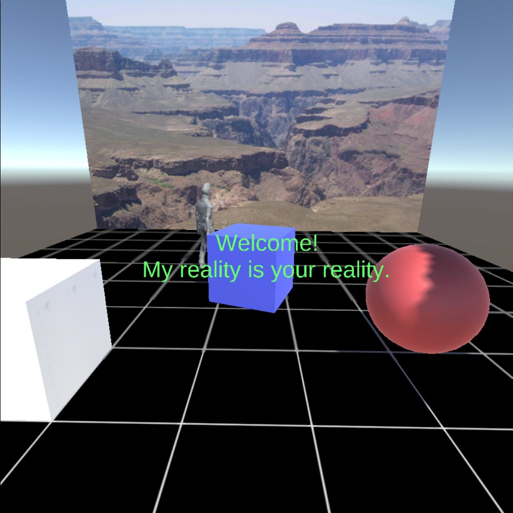

UnityでVRやってる
昨年末にOculus Goを買ってからVRゲームをいくつかやっているんだけど、自分でも作ってみたくなってきたので、UnityでVRゲームを作る勉強を始めた。

いまのところUnityによるVRアプリケーション開発という本を写経している。この本はOculus Goがまだなかった2016年の本だけど、ちゃんと動作している。
Oculus GoはAndroid端末なので、ビルドのための準備はそこまで苦労しなかった。ビルドのセットアップの具体的な手順はググると出てくるので、それでうまくいった。
スクリーンショットやスクリーンキャストは/storage/self/primary/oculus/Screenshots/や/storage/self/primary/oculus/VideoShots/にあってadb pullコマンドで取得できる。